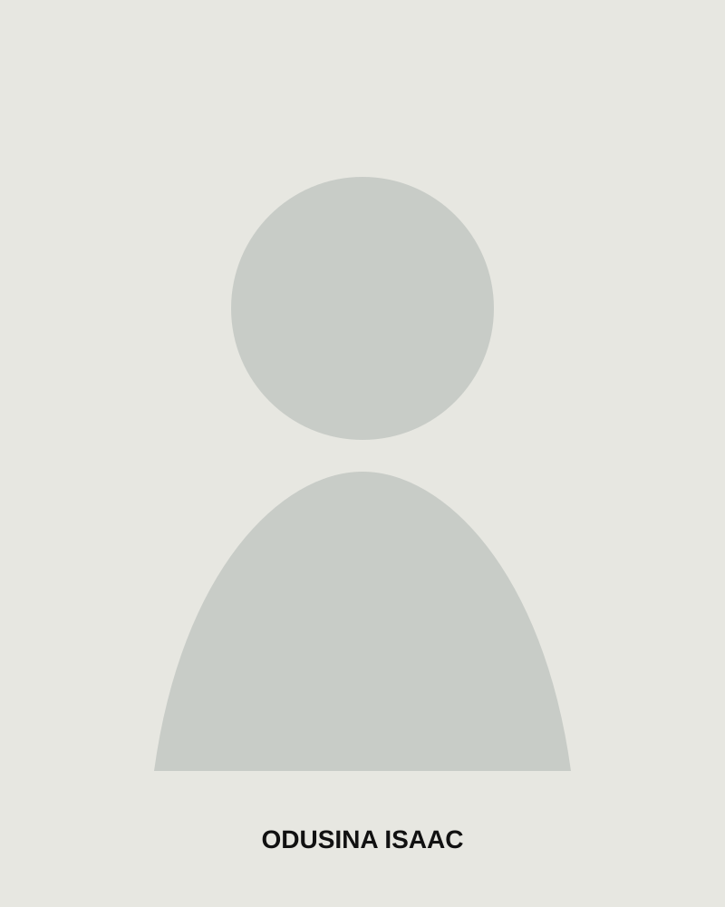

01
Brand identity
Identity systems that give businesses a consistent, credible and recognisable presence.
I'm Odusina Isaac, a creative designer with 7+ years of experience turning ideas into clear, memorable visual identities, campaigns and brand experiences.

A selection of branding, social, packaging and visual communication work. Your existing portfolio records can appear here once the correct CMS connection is restored.
Identity systems that give businesses a consistent, credible and recognisable presence.
Campaign visuals, content systems and branded templates designed to communicate quickly.
Packaging, sacks, promotional materials and production-ready artwork built for real production.
Landing pages, portfolio sites and WordPress websites connecting visual design with usability.
I'm Odusina Isaac, a Graphic Designer and Brand Identity Designer focused on helping organisations communicate with clarity and confidence.
My work spans branding, social media, packaging, large-format and industrial print, digital design and WordPress.
I care about the details that make a design useful, not just beautiful: hierarchy, consistency, production constraints, audience and the business goal behind the brief.
Experience across independent creative work, brand projects, print production, digital design and long-term collaboration.
Independent creative practice covering identity, campaigns, social content, packaging, print and digital experiences.
Creative studio delivering branding, social media design, print, packaging, customisation and web design.
Work across hospitality, construction, education, travel, organisations, SMEs and community-focused initiatives.
Logo direction, identity systems, typography, colour, brand assets and practical guidelines.
Social campaigns, promotional graphics, event communication, digital ads and content systems.
Sack design, labels, packaging, large-format graphics, merchandise and production-ready artwork.
Responsive portfolio, corporate and landing-page experiences using WordPress and modern web tools.
Visual direction that keeps campaigns, brands and teams aligned around one strong idea.
Design decisions informed by materials, dimensions, print processes, budgets and delivery realities.
Brief, audience, context, objectives and constraints.
Concepts, references, visual direction and creative routes.
Refine the chosen direction into a complete visual system.
Organised, production-ready assets with a clean handoff.
Client testimonials will appear here when the original CMS connection is restored.
Real client names and roles will be displayed instead of invented testimonials.
Available for selected freelance projects, creative collaborations and professional opportunities.